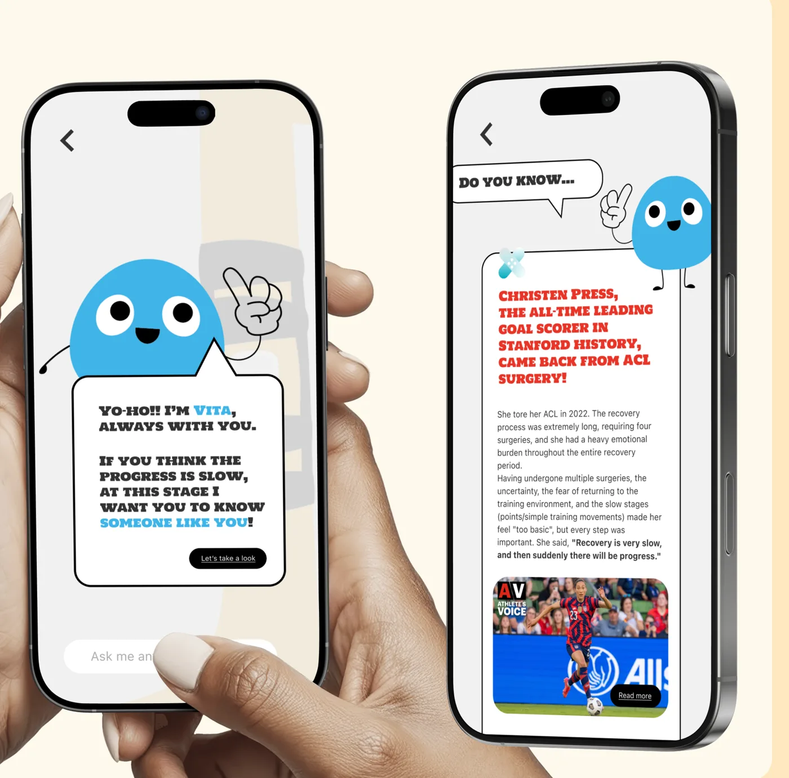
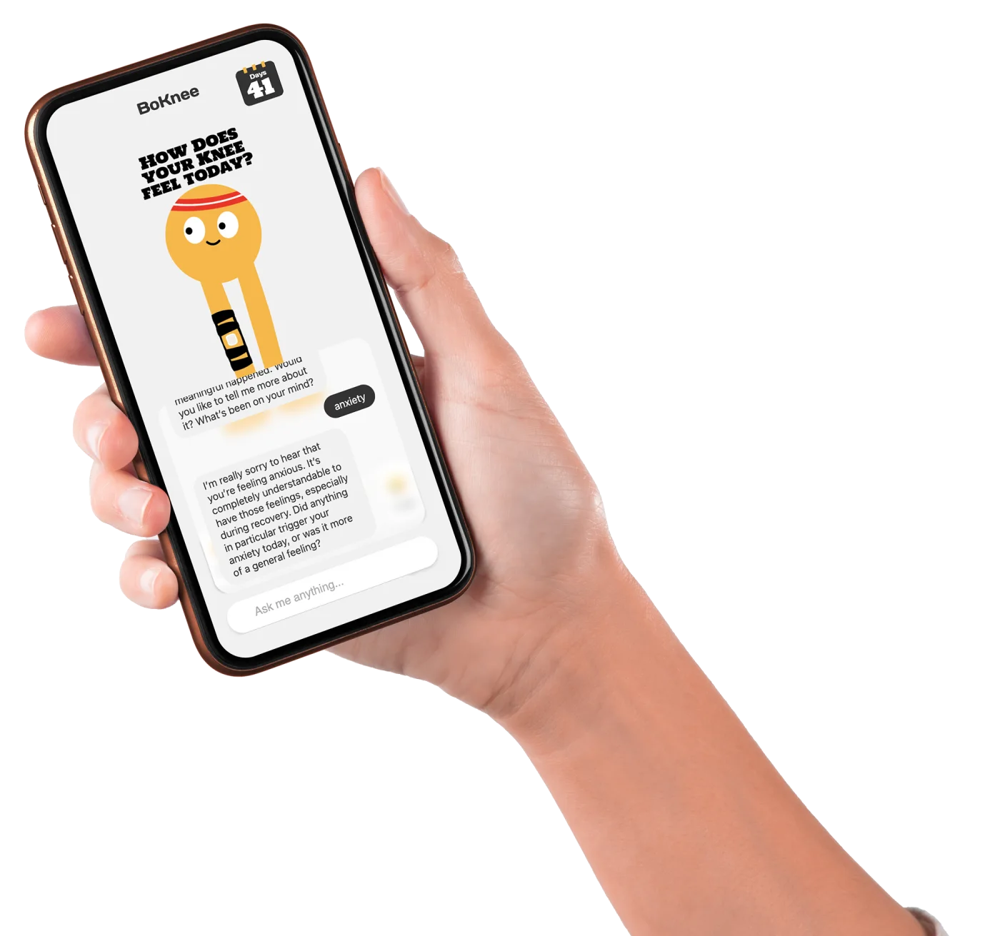
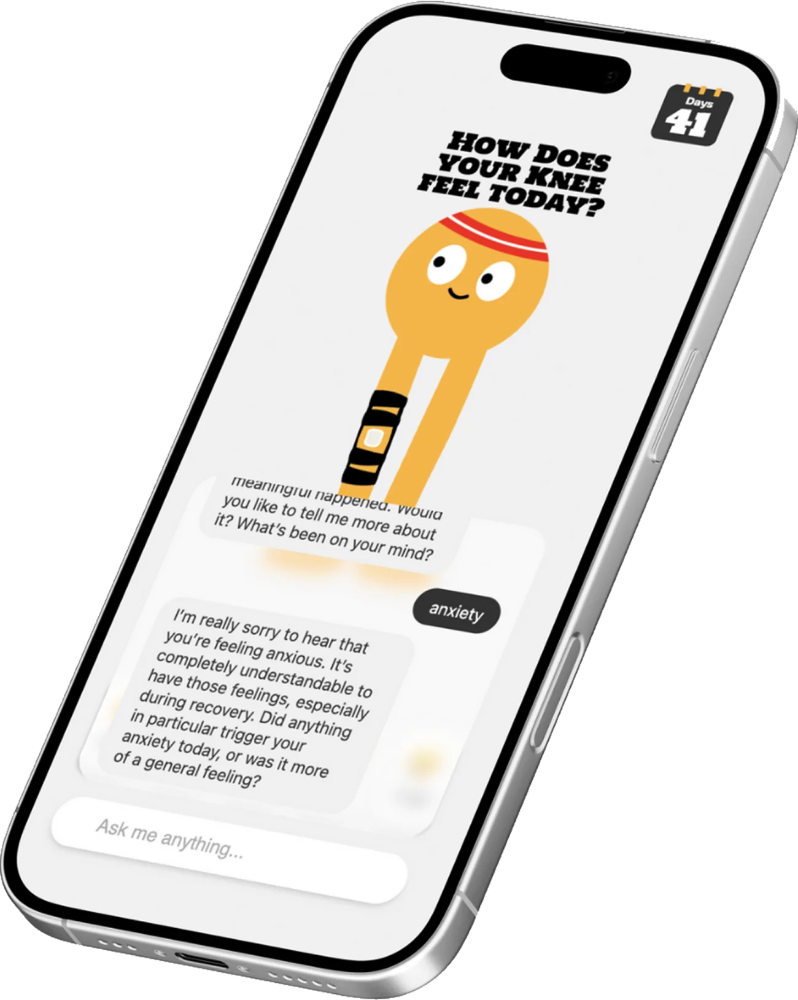
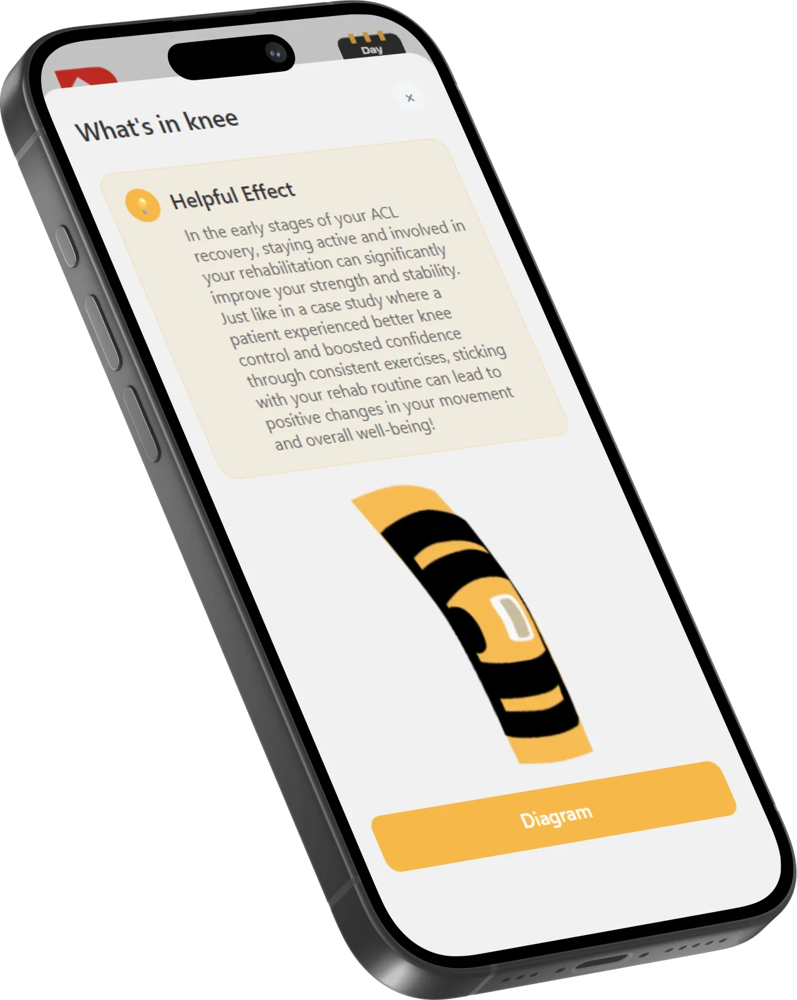
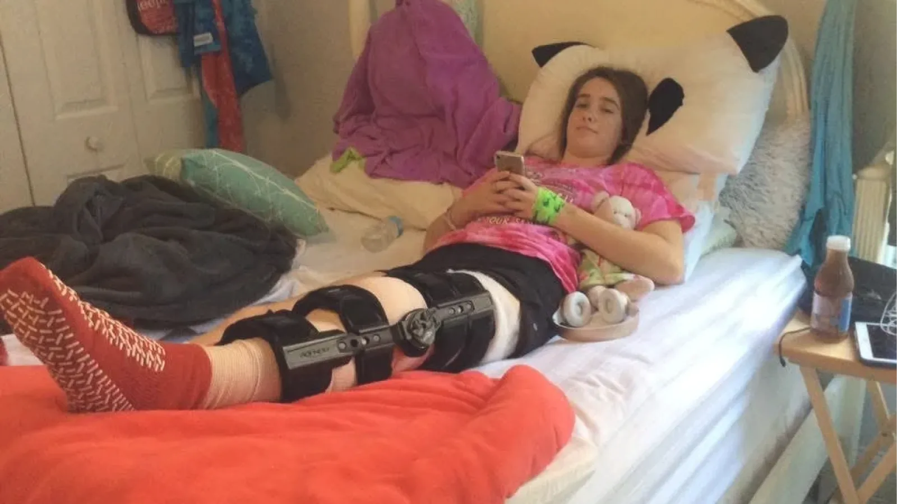
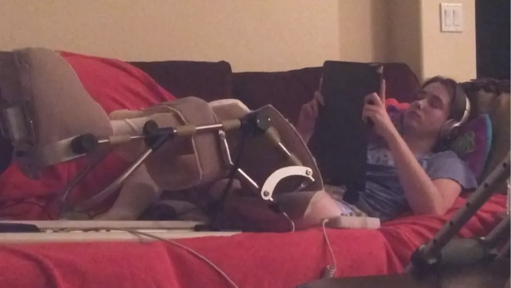
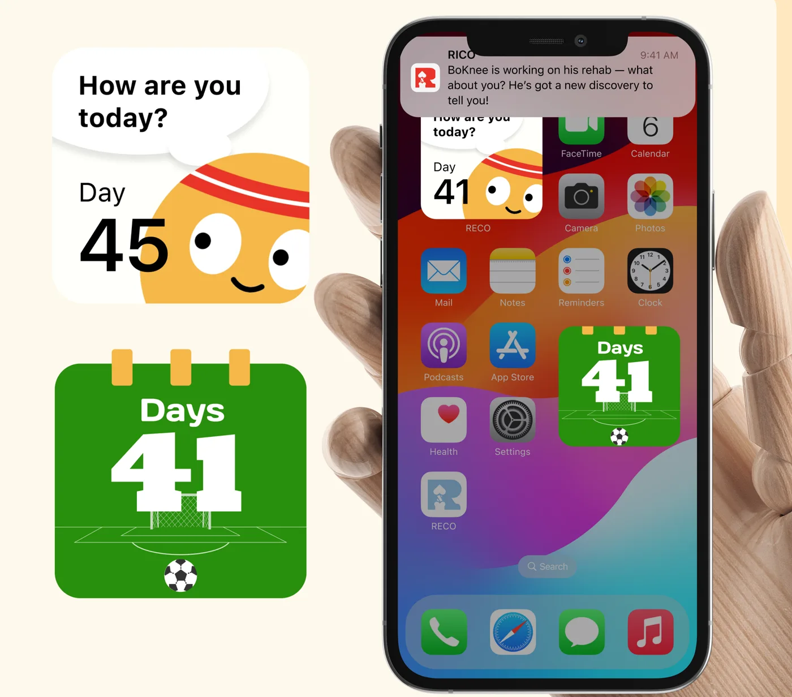
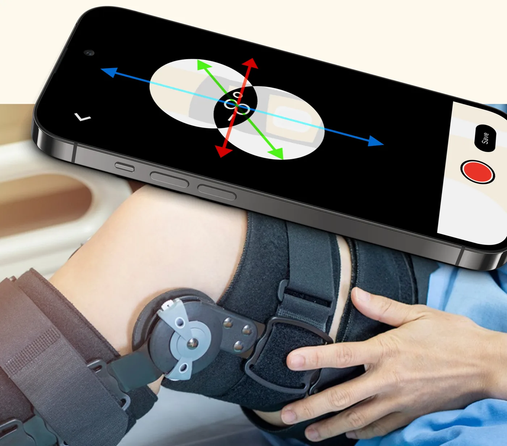

VITA, a second companion
An AI knowledge assistant for the side of rehab BoKnee doesn’t cover, such as nutrition.
A recovery companion for ACL rehab.
SCROLL
An AI recovery companion that keeps athletes motivated through ACL rehab, with a friendly character to talk to and clear insight into how their knee is healing.




Experience designer on a seven-person hackathon team: shaping the problem, the motivation model and the app experience, then prototyping it with AI tools in a weekend.


01 The problem
Scene 01 / 04Scene 02 / 04Scene 03 / 04Scene 04 / 04
Imagine you’re a 20-year-old college soccer player, training every day for the next game.
One bad landing, a torn ACL, and suddenly the season is over.
Every day you repeat the same small exercises at home, for months, on your own.
And you can’t tell whether your knee is actually healing, or if any of it is working.
Rehab breaks down in the mind first.
41.8%
of athletes experience anxiety and depression after ACL surgery. Teen and college athletes struggle to stay motivated through repetitive, months-long home programmes, and motivation, not ability, is what fails.
Restore motivation, not just routines.
We built on Self-Determination Theory: people stay motivated when three needs are met. Each became a part of RECO.
A daily check-in where you say how you feel in your own words, or with one tap.
Research-based insights and an anatomy view that show what’s happening inside your knee at this stage.
BoKnee, a warm companion who listens, validates and cheers you on, without giving medical advice.
Say hi to BoKnee.
Left is a simulation using BoKnee’s replies from a real session; right is the real build on live APIs.
Try “hi”, then “my knee felt sore today”.
Runs Llama 3.2 on your device · 0.9 GB, once.
A friend, and a window into your knee.
BoKnee opens every day by asking how you feel, what happened and what helped. It reflects your mood back, validates it, and keeps you going, always as a supportive friend, never as a doctor.
Tap the knee to see an anatomy view of the graft and what’s happening at your stage, plus a short fact drawn from peer-reviewed research and rewritten in plain, encouraging language.
Two AI pipelines, one friendly face.
Where RECO could go.

An AI knowledge assistant for the side of rehab BoKnee doesn’t cover, such as nutrition.

A day counter and check-in on the home screen, for a stronger sense of companionship.

Use the phone’s motion sensors to measure leg-lift angle, speed and shake, for more accurate progress.
Next project
Zen Bloom
View case study